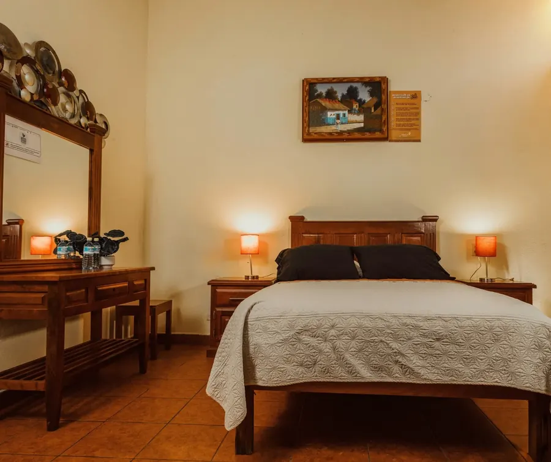
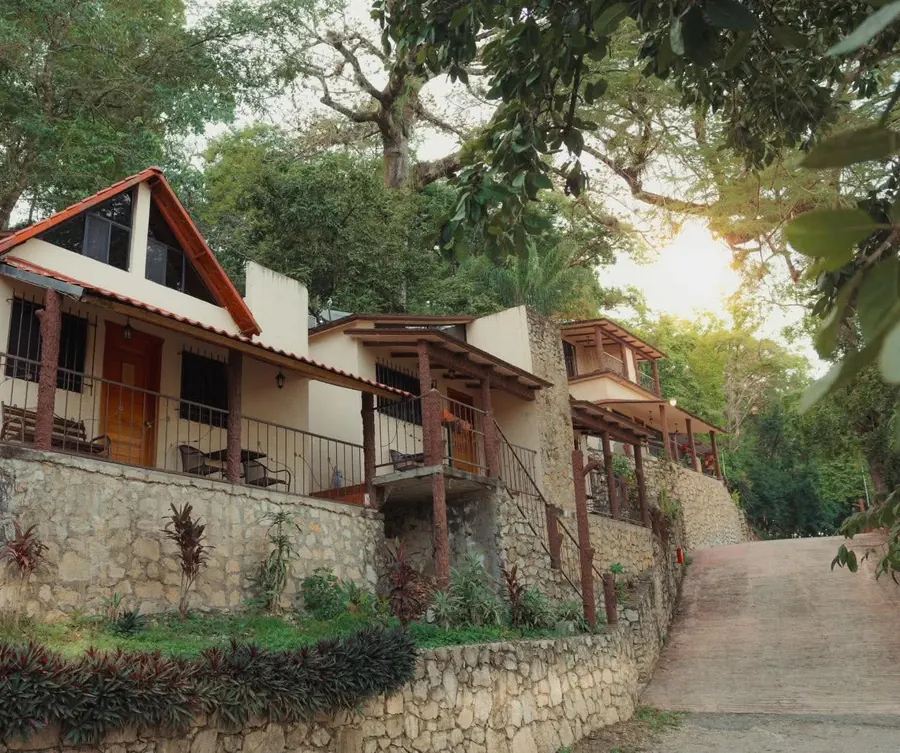
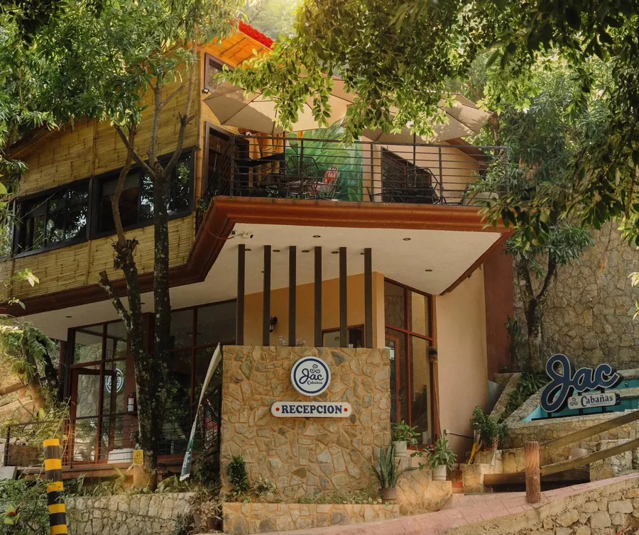
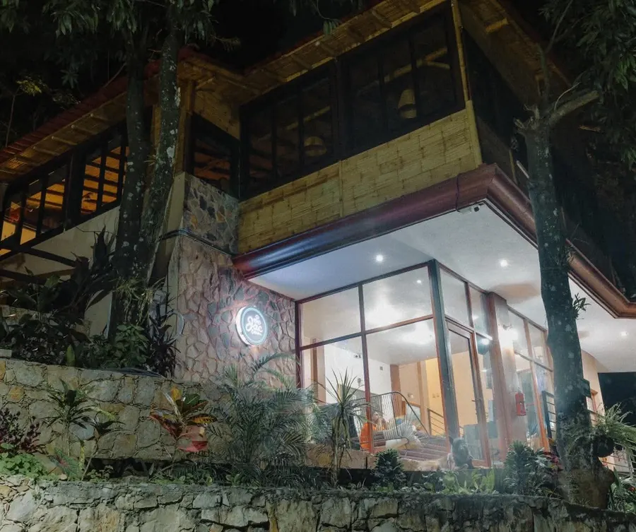
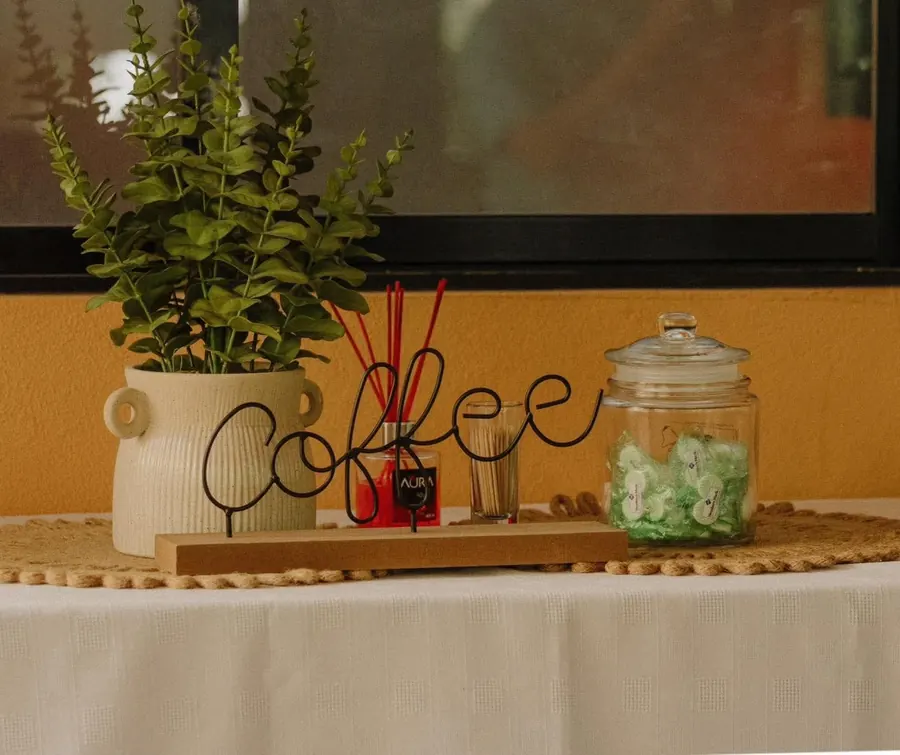
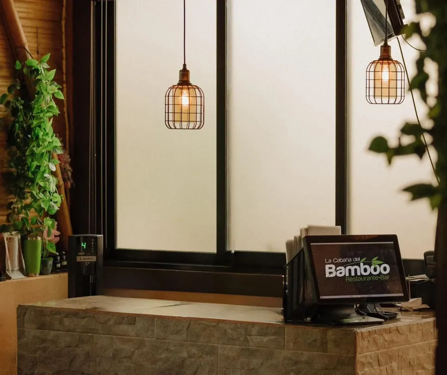
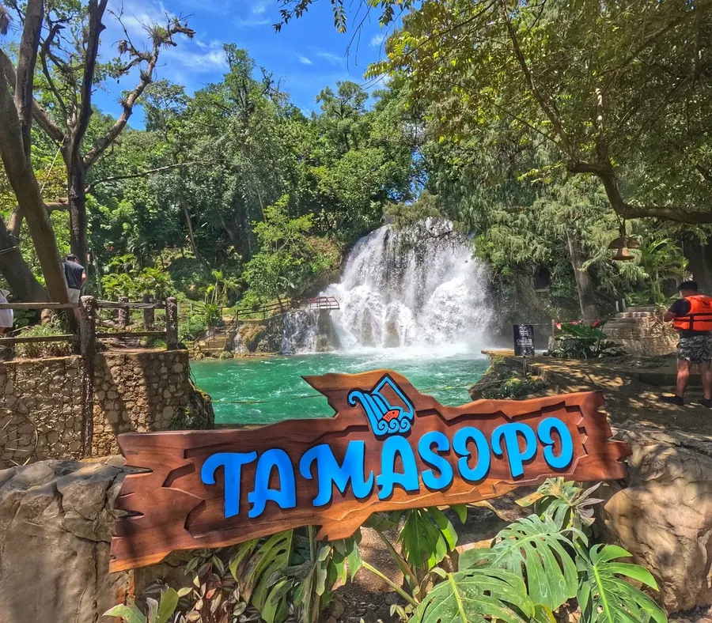

Habitaciones
Espacios cómodos dentro del complejo, ideales para estancias prácticas sin dejar de estar rodeado de naturaleza.
Capacidad: por confirmar
Tarifa: por confirmar

Huasteca Potosina · Tamasopo, S.L.P.
Escapadas sin complicaciones en cabañas rodeadas de naturaleza, a un paso de las Cascadas de Tamasopo. Una aventura que jamás olvidarás.

Sobre Nosotros
Cabañas JAC es un complejo de hospedaje en Tamasopo, en el corazón de la Huasteca Potosina, muy cerca de las Cascadas de Tamasopo. Habitaciones y cabañas cómodas, áreas verdes, asadores y acceso a nuestro restaurante-bar hacen de este un punto de partida perfecto para explorar la región — sin complicaciones, solo naturaleza.
Alojamiento
Elige entre habitaciones y cabañas cómodas, pensadas para descansar después de un día explorando la Huasteca.

Espacios cómodos dentro del complejo, ideales para estancias prácticas sin dejar de estar rodeado de naturaleza.

Cabañas privadas rodeadas de áreas verdes, con acceso a asadores y espacios al aire libre.
Amenidades
Jardines y espacios naturales para desconectar.
Espacios para preparar tus propias parrilladas.
Espacio disponible dentro del complejo.
A un paso de las Cascadas de Tamasopo.
Comida y bebida sin salir de Cabañas JAC.
Conexión disponible en recepción y restaurante-bar.

Restaurante-Bar
Después de un día de cascadas y naturaleza, nuestro restaurante-bar es el lugar para relajarte con buena comida y bebida, en un ambiente natural rodeado de bambú.


Nombre por confirmar con el cliente
Galería
Entorno de bambú y río, fachada y recepción, cabañas, áreas al aire libre y nuestro restaurante-bar.
Huéspedes
Llegamos cansados de manejar y el lugar nos regresó la calma de inmediato. Las cascadas están prácticamente a un paso.
La cabaña estaba justo como se veía en fotos, rodeada de verde de verdad. Volveríamos sin pensarlo.
Cenamos en el restaurante-bar después de un día completo de cascadas — el cierre perfecto.
Ubicación
Ubicados en Tamasopo, S.L.P., en la zona de las Cascadas de Tamasopo, en el corazón de la Huasteca Potosina.
Tamasopo, San Luis Potosí, México